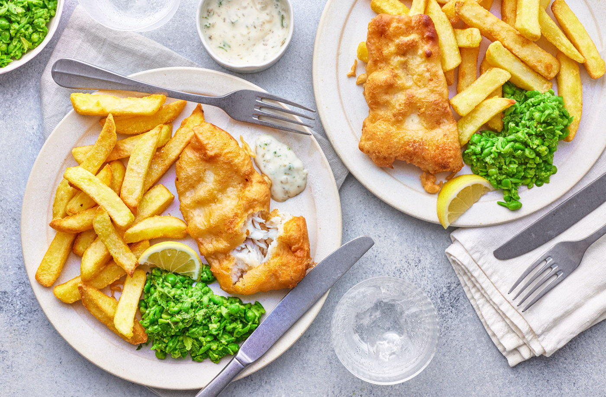

Recipe for Beer Battered Fish

You don't even need to leave the house to enjoy your favourite comfort meals. Make this pub classic of beer-battered fish with mushy peas from scratch in your own kitchen – everyone will love it!
Ingrediants
- 600g Hearty Food Co. straight-cut chips
- 180g plain flour
- 55g cornflour
- 1 tsp baking powder
- ¾ tsp fine salt
- 250ml golden ale
- 2 lemons, 1 juiced
- sunflower oil, for deep frying
- 2 x 360g pack frozen Tesco cod fillets, defrosted
- 350g frozen peas
- 10g fresh mint leaves, finely chopped
Instructions
- Mix 150g flour, the cornflour, baking powder and salt in a mixing bowl and make a well in the centre. Pour in the ale and 1½ tbsp lemon juice, then whisk until the batter is completely smooth and bubbly.
- Half fill a large saucepan with oil, then heat to 180°C. If you don’t have a kitchen thermometer, carefully dip the handle of a wooden spoon into the oil. If it’s hot enough it should bubble steadily. If it bubbles vigorously, it’s too hot. Season the fish and dust with the remaining flour. Using tongs, dip the fish into the batter to coat, then lower into the oil. Cook in 2 batches for 5-6 mins, turning, until golden and crisp. Transfer to a wire rack over a tray to stop the fish going soggy.
- Meanwhile, simmer the peas for 4 mins. Drain and mash ¾ of them (or blitz in a food processor) with ½ tbsp lemon juice, the mint and some seasoning. Stir through the remaining peas. Serve with the fish and lemon wedges, with ketchup and tartare sauce on the side, if you like.
Back to recipe list